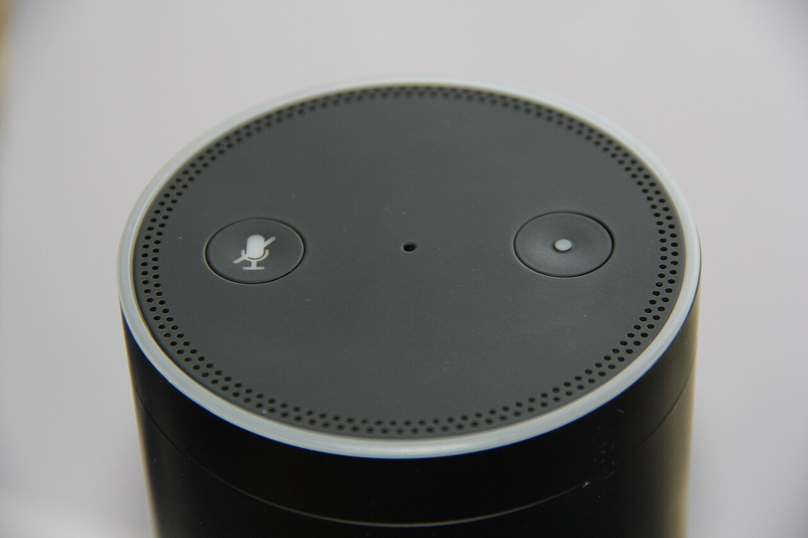

The Invisible Assistant
The AI You Use Every Day Without Noticing
Ask people what AI is, and most will say "ChatGPT". In a 2026 survey by the Pew Research Center, chatbots were the first thing that came to mind for 29% of Americans, while only 3% mentioned search engines. In an earlier survey, only 30% could recognize six common examples of everyday AI, and just 51% knew that their email spam filter uses it. Most of the AI we use is simply invisible. So let's follow one ordinary day and see where it is hiding.
7:00 - Waking Up
The first AI of the day is often the one that unlocks the phone. Apple's Face ID projects thousands of invisible dots onto your face to measure its depth, which is why a photo of you isn't enough to fool it. According to Apple, the chance that a stranger could unlock your iPhone is less than 1 in 1,000,000.
Then you start typing. Every word your keyboard suggests is a prediction made by a language model. Google's Gboard runs more than 30 of them directly on the phone, and they learn in an unusual way called federated learning: the model is trained on your phone, "all the training data remains on your device", and only a small update is sent back to improve the model for everyone.
8:00 - On the Way
Before leaving, you check how long the trip will take. Google Maps arrival times are accurate for over 97% of trips, and a neural network developed with DeepMind made them up to 50% more accurate in cities like Berlin and Tokyo.

12:00 - Inbox and Lunch Break
At lunch you check your email. You probably never see the spam: according to Google, machine learning helps Gmail block more than 99.9% of spam, phishing and malware.
Then you pay for lunch by card, and in the fraction of a second before the payment goes through, an AI decides whether it looks like fraud. Mastercard's system checks 143 billion transactions a year, each in less than 50 milliseconds, and Visa says its systems blocked 40 billion dollars of fraudulent transactions in 2023 alone.
A friend sends you a message in a language you don't speak, so you translate it. You are one of more than 1 billion people who use Google's translation tools every month, and in 2024 AI helped Google add 110 new languages at once.
21:00 - Back Home
In the evening you ask your smart speaker to play some music. To hear "Alexa" or "Hey Siri", it has to listen all the time, and sometimes it wakes up when nobody called it.

Those recordings aren't always private. In 2019 Bloomberg revealed that thousands of Amazon workers listened to Alexa recordings, each reviewing about 1,000 clips per shift. A few months later a whistleblower told The Guardian that Apple contractors "regularly hear confidential details" in Siri recordings, including medical information.
It ended up in court: in 2025 Apple agreed to pay 95 million dollars over Siri recording people who hadn't said "Hey Siri", and in 2026 Google paid 68 million dollars in a similar case, although both deny any wrongdoing. And since March 2025, every voice recording from Amazon's Echo speakers goes to Amazon's cloud.
What We Didn't Notice
In one ordinary day, AI unlocked the phone, chose the next word, planned the route, filtered the emails and approved the payment, and we noticed none of it. All of these systems learn from what we type, where we go and what we say. The ones that learn the most, though, are the apps we open to scroll. That is the next article.